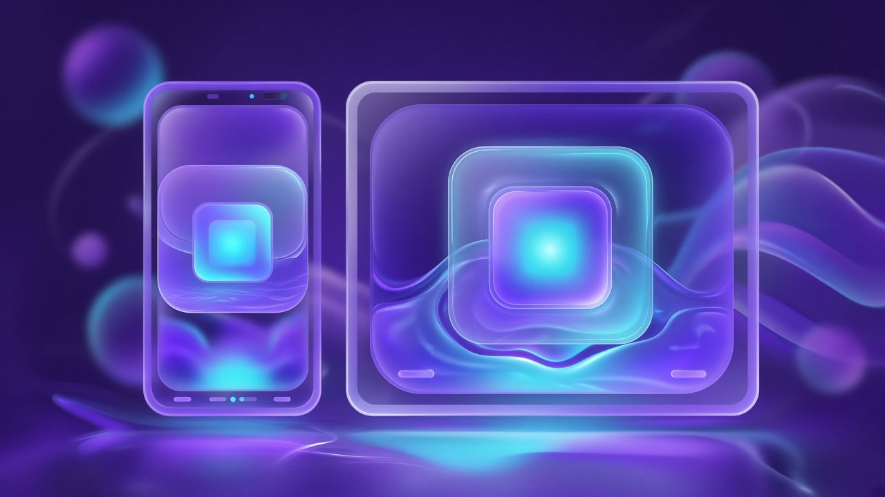

유리알 · Glass Pearl
Liquid Glass 프로스티드 패널, 숨 쉬는 앰비언트 글로우, 바이올렛↔시안 하이라이트. 크롬은 얇고 여백은 넉넉. 프리미엄이지만 가벼운 인상.
- 반투명 카드 · 블러 20px+
- 얇은 상태바 · 큰 아이콘 그리드
- 모회사 AETHERION과 같은 유리 감성
AETHEROS는 AETHERION AI의 OS 서브 회사 디자인·계획이에요. 가성비 · 고효율 · 예쁜 UI · 초고압축을 목표로, 지금은 비주얼 콘셉트 3개와 쓸 기술 후보만 정리합니다. 출시·벤치·점유율은 주장하지 않아요.

시각 콘셉트만. 실제 커널·시스템 이미지는 아직 없습니다. 폰·탭 목업은 CSS Liquid Glass 데모예요.
Liquid Glass 프로스티드 패널, 숨 쉬는 앰비언트 글로우, 바이올렛↔시안 하이라이트. 크롬은 얇고 여백은 넉넉. 프리미엄이지만 가벼운 인상.
저사양 폰을 위한 고밀도 타일·제스처 셸. 정보 밀도를 올리되 터치 타깃은 유지. “작아진 루트파일시스템”을 UI 메타포로 — 중첩 사각형, 압축된 아이콘 그리드.
한국어 타이포그래피 우선, 밝은 오렌지 악센트(가족 DNA) + 바이올렛 시스템 색. 태블릿 듀얼 페인·스플릿 앱을 기본으로. “예쁘고 읽기 쉬운” 쪽이 핵심.
출시 스택이 아니라, 디자인·프로토타입에 맞춰 검토할 후보예요. 가까운 것 / 먼 것을 표시했습니다.